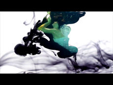
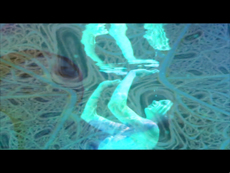

[[ Under|H2O ]] - music: Monstur O' Hara - T h e o d o r e.


"Whoever wishes to foresee the future must consult the past; for human events ever resemble those of preceding times. This arises from the fact that they are produced by men who ever have been, and ever shall be, animated by the same passions, and thus they necessarily have the same results."
Å\ Machiavelli
// Arthur Rubinstein |
Details:
Rubinstein shares his knowledge at the age of 90 in the interview taken by Robert MacNeil.
"Let the voice sing inside of you."A. Rubinstein
Duration: 11:03 min.
Language: English - Spanish subtitles
// Alberto Giacometti |
Details:
Giacometti shares his knowledge and understanding in the interview taken in 1962.
"I've felt the need to try to account for what I see, knowing at the same time that I'm bound to fail, but it's only the failure itself that leads you to the truth." Alberto Giacometti
Duration: 08:30 min.
Language: French - English subtitles
// Max Ernst |
Details:
Ernst working in his studio, creating his own world out of his white canvas virginity complex.
"The serie of suggestions and transmutations offered themselves spontaneously." M. Ernst
Duration: 03:01 min.
Language: English
// Orson Welles |
Details:
In the interview taken 8 days before he died, the director gave his last word on the Hollywood industry and artistic creation.
"I was going to show them that they were wrong, and I have spent the rest of my life showing people, trying to prove that what is said is wrong. And that has been an enormous waste of spirit and of energy." O. Welles
Duration: 02:57 min.
Language: English
// Sincere |
Details:
This KENISMAN Hommage video reveals the origin of the powerfull word sincere. The rare footage shows us that the word, with its strong connotation, has its roots in art.
Duration: 01:31 min.
Language: English
// Alfred Hitchcock |
Details:
Hitchcock gives his word on happiness in this rare interview.
"I know we're only human, we're do going for these various emotions, call them negative emotions, but when all these are removed and you can look forward on the road that's clear ahead: and now you going to create something." A. Hitchcock